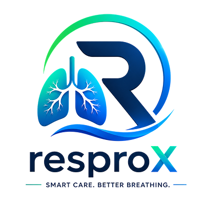

|

|
|
Powered by Resprox Cloud
Complete CPAP & BiPAP therapy monitoring, in one place
|
|
Deck Mount’s Resprox connects your CPAP and BiPAP devices to a single web platform, giving patients and clinicians a complete workflow for therapy data collection, session analysis, device settings management and reporting.
The platform presents therapy metrics and trends to the clinician for review. It is designed to support clinical decision-making and does not replace a physician’s judgement or provide a diagnosis.
|
|
Core Capabilities
|
|
1. Therapy Dashboard & Session Analysis
- Daily “at a glance” view of usage hours, AHI, mask leak and pressure for every device.
- Session-by-session breakdown with detailed therapy waveform analysis.
- Where a value cannot be reliably read from the device, the report shows “--” instead of an estimated figure.
|
|
2. Trends & Compliance Tracking
- Recent-session and long-term trend charts to see how therapy is progressing.
- Usage and adherence summaries to support compliance reviews.
|
|
3. Remote Device Settings
- One common Settings screen for both CPAP and BiPAP devices.
- Changes are sent securely through the Resprox server and delivered to the device by serial number.
- Every change is confirmed by the device — if it is not applied, your draft is reverted and you are told.
|
|
4. Mask Fit & Comfort
- Mask-fit guidance and leak insights to help improve comfort and therapy quality.
|
|
5. Clinician-Centred Review
- A healthcare-professional portal to review patients, devices and therapy history.
- Data and findings are presented as information for clinical review; the final interpretation remains with the qualified clinician.
|
|
6. Reports, Data Upload & Messaging
- Standardised therapy reports that can be generated and re-issued whenever required.
- Device data upload to the cloud, with in-app messaging between patients and care teams.
|
|
Resprox brings device data, therapy analysis, settings control and clinical review together in a single workflow.
|
Regards,
Team Deck Mount
Resprox — Smart Care. Better Breathing.
|
|
This information is intended to support, not replace, clinical judgement. Resprox does not provide a definitive diagnosis.
|